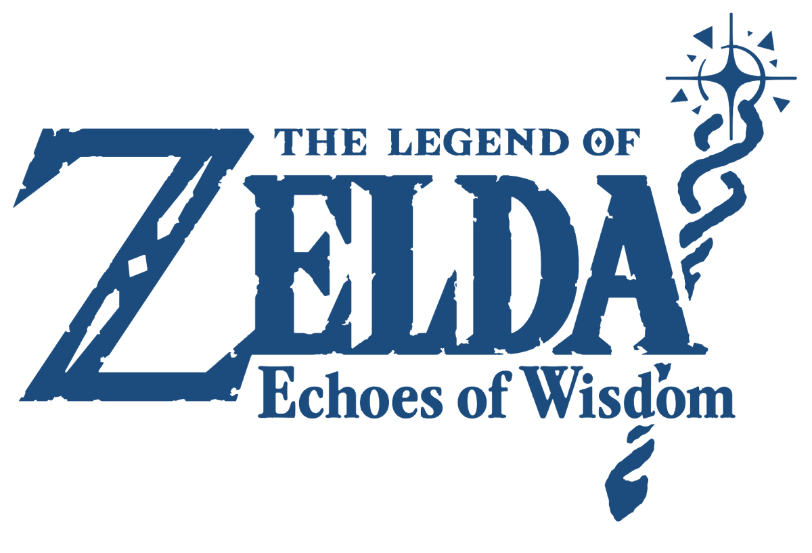

The Legend of Zelda: Echoes of Wisdom

| Release Date: | September 26th, 2024 |
| Genre: | Adventure Puzzle |
| Developer: | Nintendo |
| Platform: | Nintendo Switch |
| Details: | Nintendo Store |
The Legend of Zelda: Echoes of Wisdom is a 2-D Adventure Puzzle game developed by Nintendo. This is the first game in The Legend of Zelda series to have Zelda as the main character, as Link has fallen into the Still World after defeating Ganon. Mysterious rifts have been appearing across Hyrule, and while they usually would be temporary, they're no longer being mended and increasing in frequency. It's up to Zelda and her new friend, Tri, to travel across the land and mend the rifts engulfing Hyrule. To achieve this, Tri bestows some of their power to Zelda, gifting her the Tri Rod. This allows Zelda to create echoes, which are copies of various items and creatures she has encountered on her travels.
This game is fairly unique in how it plays, for it feels like it was designed as a traditional 2D Zelda game, but since you're playing as Zelda, you don't have the traditional tools are your disposal. It kind of forces you to think of different approaches towards combat, traversal, and solving puzzles, which almost turns the whole game into a puzzle game in a sense. The game provides you with plenty of echoes to choose from, so there's always multiple answers to any situation, though there are some echoes that are definitely more useful than others. It's a bit of a return to form for the Zelda series, but heavily leans into the puzzle aspects of the game with the toolkit given to Zelda.
Gameplay
The main mechanic of this game is the echoes system, as it gives so much power to Zelda than any tools Link would normally get. As mentioned above, echoes are copies of various items or monsters you've encountered throughout your adventure. While a lot of these mundane items would seem fairly useless, over time you begin to learn their unique properties to help solve the many obstacles you'll encounter. Like small tables can be jumped on, beds can be stacked to make a staircase, crates can float in water, and many, many others. It's a simple concept, but after learning a number of echoes you start to find ways to "break" the system. At least it feels like it, but the game actively rewards you for creative thinking, by either making fights easier or hiding a collectable in that hard-to-reach spot. It's a fun system, and they incorporated a healthy amount of puzzles around the mechanic, giving that "a-ha!" moment multiple times throughout the game.
While fun, I wish there was more of a reason to utilize all the echoes at your disposal. The beginning of the game is great, since your options are so limited, but after getting tons of echoes, I found myself using the same 10 or so echoes to solve everything... I understand that it's part of progressing through the game, to upgrade the early game echoes with stronger ones for combat, but when Floating Tiles can be used to bypass entire dungeon rooms, I'll use them over others. Some the later echoes I never used because they fulfilled the same role as some earlier echoes I had, so why bother? I wish they forced you to switch up which echoes you had to choose from, or gave more incentive to diversify which ones you used. It could also just be a problem with the sorting options they had available, as flipping through 60+ echoes was a pain. Could just be to switch from a single list to pick from, to a grid of sorts? That way more echoes would've been viewable from the screen.
They also couldn't have a Legend of Zelda game without Link's mechanics. Early on in the game, you find Link's sword, which grants you the ability to enter your Swordfighter Form. This is essentially just playing as Link, unlocking more of his abilities as the game progresses, and I'm not the biggest fan of it. While I can see a reason for including his abilities, as fighting with Zelda is tedious. Summoning echoes to fight for you relies on their AI to actually hit your target, and what little damage Zelda can do pales in comparison. However, the Swordfighter Form trivializes a lot of enemy encounters, as why utilize echoes when I can just deal tons of damage as Link? I think the Swordfighter Form makes the game more accessible, but I would've preferred it to not be included. That would've limited my options to just my echoes and force me to be creative with combat, which seems to be a core focal point of the game.
Worldbuilding & Story
This world of Hyrule was a joy to explore. While not nearly as expansive as the BotW Hyrule I'm familiar with (though nothing will be as expansive as that), it was still nice having the same familiarity of the layout of Hyrule's points of interest. Everything seemed to be in the same area as previous entries to the series, but here felt far more packed with content, loot, and enemies. Each little pocket of the map has some purpose, you can't go far without finding something that catches your eye, you explore it, then find the next thing to chase after. I'd get so sidetracked with following these "pieces of candy", that I've explored a whole area before realizing "oh I should get back on the quest".
While exploring Hyrule was a lot of fun, uncovering collectibles and completing quests around the world, I was rather disappointed in the dungeons along the main questline. Traditionally, I've seen Zelda dungeons as mini Metroidvania sections of the game, where you explore a variety of rooms and are teased of some mechanic you're missing to truly explore the dungeon in it's entirety. After completing some fight and puzzles, you get a new ability, and you can then backtrack through the dungeon to reach new areas to eventually get to the boss. This games dungeons are nothing like that... There's definitely some dungeons that are better than others, but it felt like most of these dungeons were fairly one-note. Enter a room, clear the enemies, solve the puzzle, and move on. It didn't feel like there was many rooms that I had to return to, or was missing something. It felt less of a dungeon, and more like a corridor. Still had puzzles, but very linear in terms of progression through them.
I am a fan of the the story direction of this game. It was a bit of a twist in that the game starts you off with the typical Link vs Ganon fight, and the game takes place in the aftermath of that fight's outcome. While I won't get into the details of the story, there's distinct halves of the story, and I like how the game treats these halves. The beginning feels foreboding, as you're unsure how things will turn out and there's a lot of unknowns. The second half, while some things are still a mystery, you know what you have to do, and you're not alone in fighting anymore. It's a nice progression, and the side quests empower this idea that it's not just Zelda fighting, but all of Hyrule fighting for it's future.
Visuals & Audio
Not too much to say here. I think the art direction they went with is fine, it's simplistic and still gives the world a colorful look. It does look less toy-like than Link's Awakening DX, it's more stylized and less of a "plastic" look. The soundtrack is good and some of the tracks really helped with some of the cutscenes in the game, but besides that didn't stand out too much. Which is a good thing with how often you hear some of the tracks while exploring the world, not distracting but there to help provide the ambiance of this area's setting.
Overall Thoughts
While I might sound critical of this game, I think it's a pretty good game! The echoes mechanic is very empowering and makes Zelda feel like a powerful character, despite her lack in combat abilities. It's felt like a traditional Zelda game through in through, just with different protagonist with a completely different toolkit. It's familiar, but felt different in how you approached the game. The game definitely has some weak spots, but the replayability of the game is astronomical with the echo system, that no two playthroughs will ever be the same. I love the mechanic, and there's enough within the game to really experiment with it's capabilities. It gives that Zelda experience, but leans way more into the puzzle-solving side of the game, which may not be for everyone. I'd recommend this game to those that I know enjoy a good adventure game with some puzzles, but not so much to those looking for a more straight-forward experience.